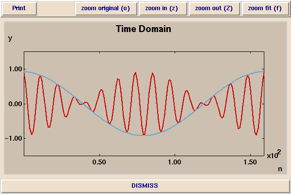
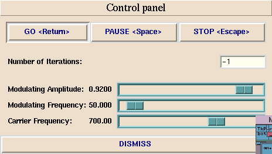
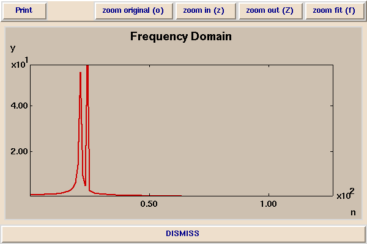

In this demonstration, you observe the effect of having one sinusoid (the modulating waveform) multiply another (the carrier waveform). This is the technique used in AM radio transmission, where the carrier frequency ranges from about 530 kHz to about 1.6 MHz (depending on the station). One kHz is one thousand cycles per sencond, while one MHz is one million cycles per second. For AM radio transmission, the modulating signal is an audio signal, constrained to a frequency range from about 50 Hz to about 10 kHz. One kHz is one thousand cycles per second.
Here is a picture of a modulating waveform (in blue) affecting the frequency of a carrier (in red):

The modulating waveform affects the amplitude of the carrier. The job of an AM radio receiver is to extract the modulating waveform (the blue) from the carrier signal (in red). How this is done is covered in EE120.
The above signals were generated with the following control panel:

The frequency content of the above modulated signal is much simpler than that of FM modulation:
